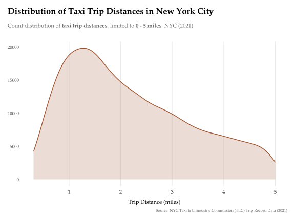

Show Code
colour <- COLOUR_PALETTE[[4]]
ggplot(
TAXI_TRIPS_NYC, aes(
x = trip_distance,
)
) +
# KDE plot
geom_density(
aes(y = after_stat(count)), # compare actual counts between vendors (instead of probability density)
adjust = 1.6, # higher value smoothens fluctuations
linewidth = 0.7, # KDE line thickness
colour = colour,
fill = colour,
alpha = 0.2
) +
# set x and y axis tick intervals
scale_x_continuous(n.breaks = 10) +
scale_y_continuous(n.breaks = 5) +
xlim(c(NA, 5)) +
# set text for: title, subtitle, caption
labs(
title = "<b>Distribution of Taxi Trip Distances in New York City</b>",
subtitle = "Count distribution of <b>taxi trip distances</b>, limited to <b>0 - 5 miles</b>, NYC (2021)",
caption = FIG_CAPTION,
x = "Trip Distance (miles)",
y = NULL
) +
# apply base theme
theme_minimal(
base_family = BASE_FAMILY,
base_size = BASE_SIZE
) +
# finetune theme elements
theme(
# title, subtitle, caption
plot.title = element_markdown( # markdown elements to add HTML/CSS styling/colouring
size = rel(1.5), # relative font size to base_size (from base theme)
margin = margin(b = 12) # bottom vertical spacing
),
plot.subtitle = element_markdown(
colour = "#6e6e6e", # grey
size = rel(1),
margin = margin(b = 24),
),
plot.caption = element_text(
colour = "#6e6e6e",
size = rel(0.7),
hjust = 1 # caption right-aligned (0 = left-aligned)
),
plot.title.position = "plot", # align title to the left of the figure
# axes, grid, legend, margin
axis.title.x = element_text(margin = margin(t = 9)),
panel.grid.major.y = element_blank(),
panel.grid.minor = element_blank(), # remove all minor grid lines
axis.text.x = element_text( # x axis ticker labels
vjust = 0.5, # distance to x axis
colour = "black",
size = rel(1.2)
),
legend.position = "none", # remove all legends
plot.margin = margin(15, 15, 15, 15), # set consistent outer border space
)